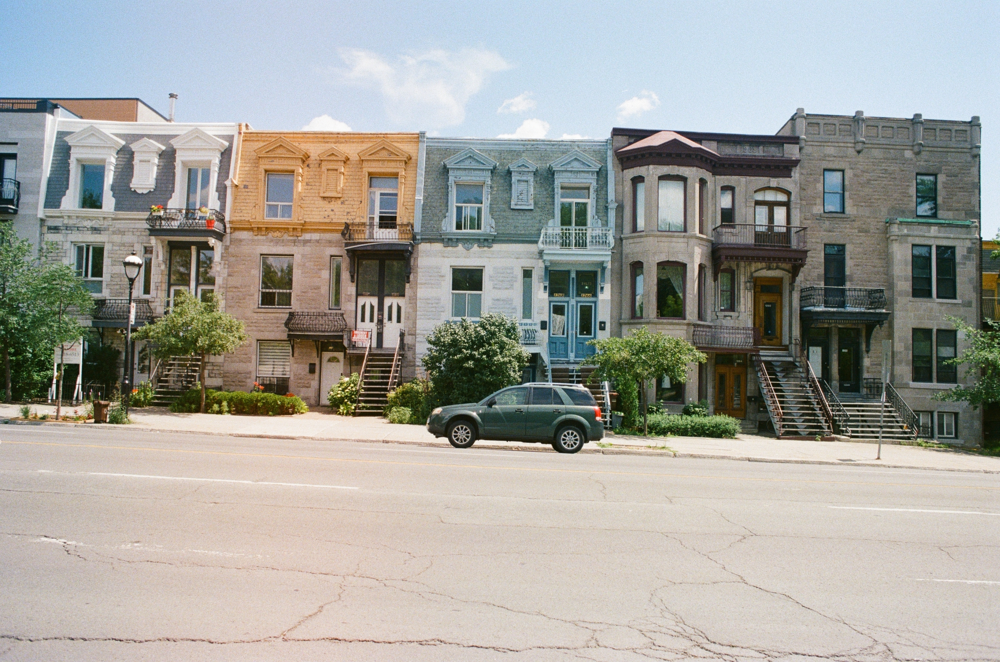
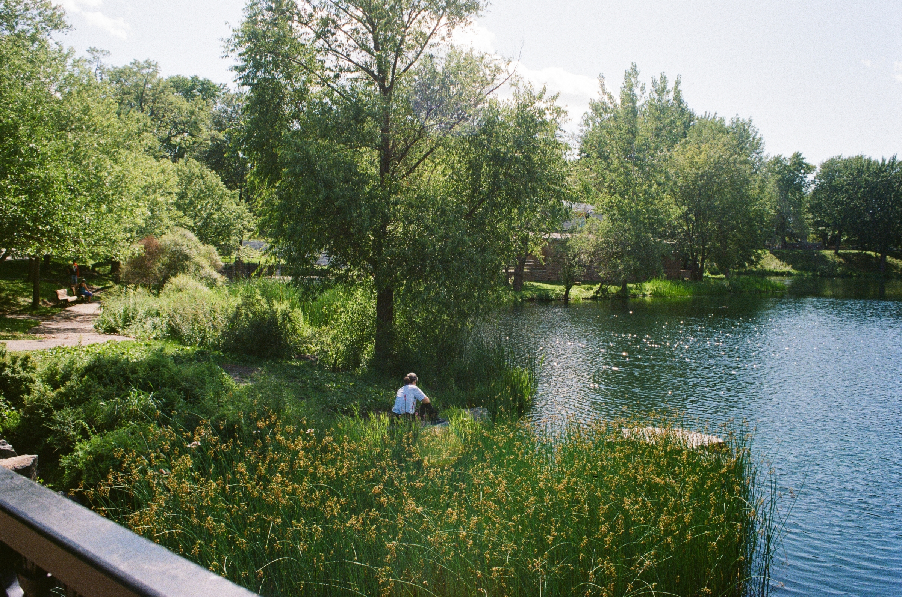

<!-- photo grid -->
<h1>dabbling in film</h1>
<p>my primary camera is <u>minolta x300</u> with film stock <u>kodak ultramax 400</u>.</p>
<br>

<script src="slide.js"></script>

      
<!-- Slideshow container -->
<div class="slideshow-container">

    <!-- Full-width images with number and caption text -->
    <div class="mySlides fade">
       
      <!-- <div class="text">Caption Text</div> -->
    </div>
  
    <div class="mySlides fade">
      
      <!-- <div class="text">Caption Two</div> -->
    </div>
  
    <div class="mySlides fade">
      
      <!-- <div class="text">Caption Three</div> -->
    </div>

    <div class="mySlides fade">
        
        <!-- <div class="text"></div> -->
      </div>

      <div class="mySlides fade">
        
        <!-- <div class="text">Caption Three</div>-->
      </div>
  
    <!-- Next and previous buttons -->
    <a class="prev" onclick="plusSlides(-1)">&#10094;</a>
    <a class="next" onclick="plusSlides(1)">&#10095;</a>
  </div>
  <br>
  
  <!-- The dots/circles -->
  <div style="text-align:center">
    <span class="dot" onclick="currentSlide(1)"></span>
    <span class="dot" onclick="currentSlide(2)"></span>
    <span class="dot" onclick="currentSlide(3)"></span>
    <span class="dot" onclick="currentSlide(4)"></span>
    <span class="dot" onclick="currentSlide(5)"></span>
  </div>